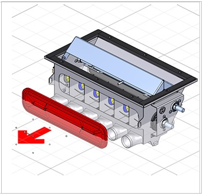

Solid Edge Illustrations workflow
Use Solid Edge Illustrations to create a set of illustrations. This set of illustrations is a storyboard. Once the illustrations are complete, then the storyboard is published to the desired image format or as a PDF or HTML file.

Create graphical Illustrations
To use Solid Edge Illustrations to create graphics:
-
Open your 3D model in Solid Edge, and then choose Tools tab→Environs group→Solid Edge Illustrations
 .
. -
Create one or more illustrations. Illustrations capture the viewpoint, render style, exploded state, and many other properties of the 3D view.
-
Add markups and callouts to your illustrations.
-
Publish your illustrations as raster or vector images.
Create a 3D PDF or HTML document
To use Solid Edge Illustrations to create a single-page 3D PDF or HTML document or web page:
-
Open your 3D model in Solid Edge, and then choose Tools tab→Environs group→Solid Edge Illustrations
. -
Create one or more illustrations.
-
Pick a single-page template.
-
Customize the template, change the styles and colors, add logos.
-
Preview the template and try the interactive buttons and 3D view.
-
Publish your illustrations as a single page PDF or HTML document.
Create an animation
To use Solid Edge Illustrations to create an animation:
-
Open your 3D model in Solid Edge, and then choose Tools tab→Environs group→Solid Edge Illustrations
. -
Create a series of illustrations. Each illustration represents a key frame for your animation.
-
Set up timing and transitions.
-
Publish the storyboard as an animation.